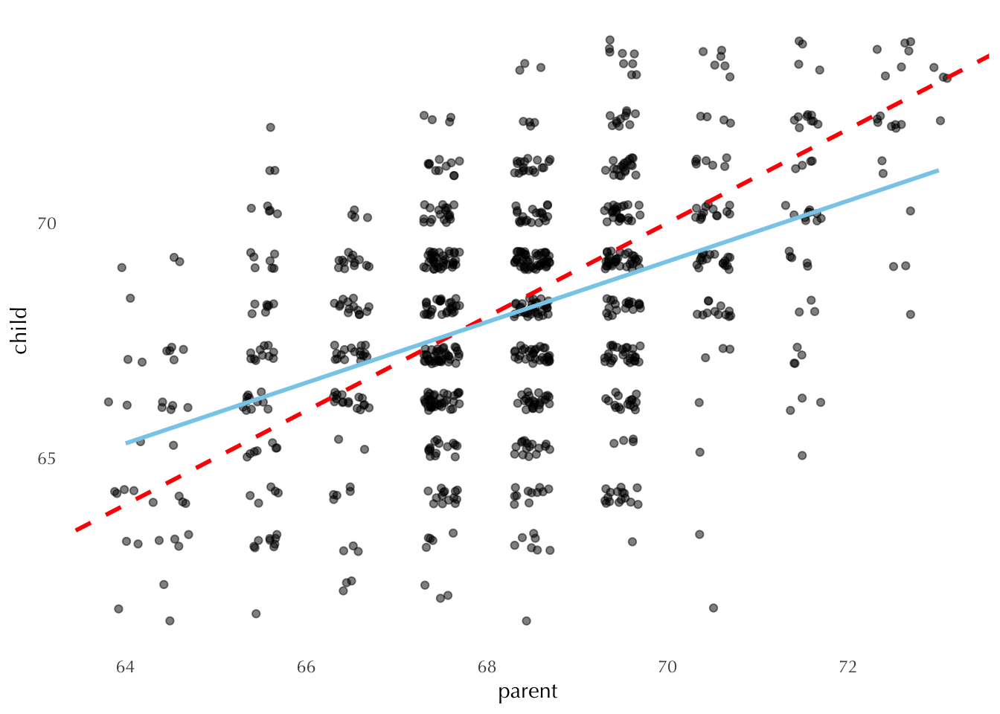
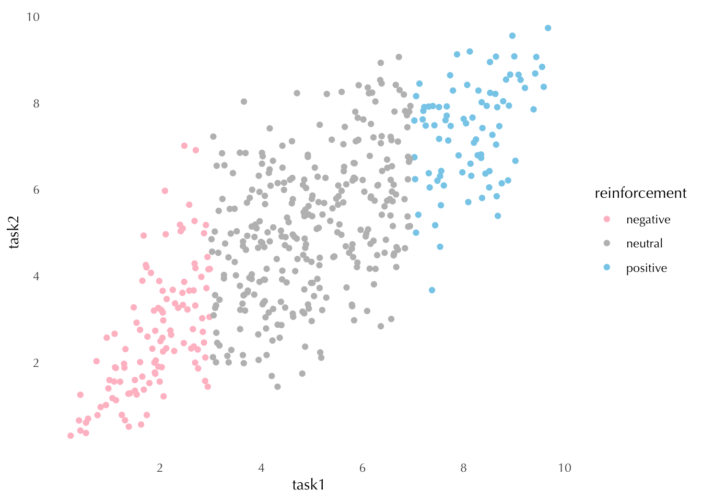

Regression to the mean is one of the greatest parables in statistics. The term originated in 1886, when Francis Galton was studying hereditary patterns in human populations. While he was studying the association between children’s and parent’s heights, he noticed that tall (short) parents tend to have children shorter (taller) than themselves; and that they tended towards a population average.
Code
HistData::Galton |>ggplot(aes(x = parent, y = child)) +geom_jitter(alpha =0.5) +## line of equalitygeom_abline(slope =1, intercept =0, linetype ="dashed", color ="red", linewidth =1) +## regression linegeom_smooth(method = lm, se =FALSE, color ="skyblue")

This is the data originally analyzed by Galton himself1. The dashed line represents equality, meaning that parents and children have the same height. But Galton noted that children’s heights were actually closer to the blue prediction line.
The key insight is that, whenever randomness is involved, the more extreme outcomes will tend to be followed by more moderate outcomes. Why? Because part of the reason these outcomes are so extreme in the first place is due to randomness. Galton also termed this phenomena “regression to mediocrity”2.
Nowadays, we would look at this same problem using linear regression, which allows us to put the predicted heights of children into a simple formula.
Code
d <- HistData::Galton |>mutate(parent_centered = parent -mean(parent))OLS <-lm(child ~ parent_centered, data = d) ## scalingcoefficients(OLS)
(Intercept) parent_centered
68.0884698 0.6462906
Note that the heights of parents have been centered in order to produce an intercept that corresponds to the population average (or “mediocrity”).
At first encounter, some people will interpret this as meaning that regression to the mean implies that heights will become “more average” over time. Thus, a parent who is 5 inches above average is predicted to have children 3.2 inches taller than average, who in turn are predicted to have children 2.1 inches taller than average, and so on. This very common misunderstanding arises from neglecting the error term when thinking about future observations.
The point predictions regress toward the mean—that’s the coefficient less than 1—and this reduces variation. At the same time, though, the error in the model—the imperfection of the prediction—adds variation, just enough to keep the total variation in height roughly constant from one generation to the next.
Regression to the mean thus will always arise in some form whenever predictions are imperfect in a stable environment. The imperfection of the prediction induces variation, and regression in the point prediction is required in order to keep the total variation constant.
Regression to the mean will people to see causality where there is none.
As mentioned earlier, this phenomena shows up all the time wherever randomness (or “luck”) is expected to play a role. Thus, we see it in everything from sports to public policy3. This is a problem because human beings are inclined to find amazing patterns when they look at randomness. Obviously, this is mostly harmless when, for example, the source of randomness is clouds in the sky and the patterns we find take the form of “a cow” or “a face”4. But in other settings, this same phenomena can become worrisome.
A very famous real-world example is contained in an article titled “On the psychology of prediction” (Tversky & Kahneman, 1973):
The instructors in a flight school adopted a policy of consistent positive reinforcement recommended by psychologists. They verbally reinforced each successful execution of a flight maneuver. After some experience with this training approach, the instructors claimed that contrary to psychological doctrine, high praise for good execution of complex maneuvers typically results in a decrement of performance on the next try. What should the psychologist say in response?
To answer this question we simulate data from 500 pilots, each of whom performs two maneuvers, and with each maneuver scored continuously on a 0-10 scale. Each pilot has a “true ability” that is unchanged during the two tasks, and the score for each test is equal to this true ability plus an independent error. Pilots get praised when they score higher than 7 during the first maneuver, and receive negative reinforcement when they score lower than 3.
The connection between this example and Galton’s study is not obvious at first glance. Here, each pilot’s score exhibits regression to her “true ability”, in the sense that we expect “luck” to play an important role. As before, we don’t really expect these “true abilities” to remain constant over time. In fact that would defeat the entire purpose of flight school. But we do expect these underlying abilities to change very slowly.
Note that we make sure, by design, that reinforcement has no effect on performance on the second task.
Code
N <-500true_abilities <-rnorm(N, 0, 1)# mapping the true abilities + random noise to a [0,10] scaletask1 <-plogis(true_abilities +rnorm(N, 0, 0.5)) *10task2 <-plogis(true_abilities +rnorm(N, 0, 0.5)) *10df <-tibble(true_abilities, task1, task2) |>mutate(reinforcement =case_when( task1 <3~"negative", task1 >7~"positive",TRUE~"neutral") )df |>ggplot(aes(x = task1, y = task2, color = reinforcement)) +geom_point() +scale_color_manual(values =c("pink", "grey", "skyblue")) +scale_x_continuous(breaks =seq(2, 10, 2)) +scale_y_continuous(breaks =seq(2, 10, 2))

We can now compute the average change in scores for each group of pilots, which the instructors interpret to be the causal effect of reinforcement.
Notice that, on average, the pilots who were praised did worse on the second task, whereas the pilots who received negative reinforcement did better. But we know that such effect doesn’t exist. And we know this because we created these data so that task 1 and task 2 were unrelated. The “causal pattern” we have just observed is a consequence of the noise in the data6. Pilots who scored very well on task 1 are likely to have a higher skill and also to have been somewhat lucky. Thus, it makes sense that they perform slightly worse on task 2.
This is how Tversky and Kahneman (1982) explain it:
Regression is inevitable in flight maneuvers because performance is not perfectly reliable and progress between successive maneuvers is slow. Hence, pilots who did exceptionally well on one trial are likely to deteriorate on the next, regardless of the instructors’ reaction to the initial success. The experienced flight instructors actually discovered the regression but attributed it to the detrimental effect of positive reinforcement. This true story illustrates a saddening aspect of the human condition. We normally reinforce others when their behavior is good and punish them when their behavior is bad. By regression alone, therefore, they are most likely to improve after being punished and most likely to deteriorate after being rewarded. Consequently, we are exposed to a lifetime schedule in which we are most often rewarded for punishing others, and punished for rewarding.
Gelman, Andrew, Jennifer Hill, and Aki Vehtari. 2020. Regression and Other Stories. Cambridge University Press.
Hacking, Ian. 1990. The Taming of Chance. Cambridge University Press.
Stigler, Stephen M. 2016. The Seven Pillars of Statistical Wisdom. Harvard University Press.
Footnotes
He later analyzed data from pairs of brothers in the same way he analyzed parents and children. And here he also found evidence of “regression to the mean”. This was surprising because there was no directionality, neither brother inherited his height from the other. He then discovered that, unless both measurements were perfectly correlated \((\rho = 1)\), both the prediction and equality lines had to be different from each other.↩︎
Historically, there have been two kinds moral judgments regarding averages and normal distributions (Hacking 1990): (1) the Quetelet-Durkheim conception of the normal as the right and the good; and (2) Galton’s notion of the normal as the mediocre, and in need of improvement.↩︎
This also seems to be the reason why so many bands appear to suffer from “second album syndrome” or “sophomore slump”.↩︎
This my solution to exercise 6.8 in Regression and Other Stories.↩︎
We could also follow Judea Pearl’s causal framework and say that there’s a back-door between task 1 and task 2 due to the fact that we have failed to condition on “true abilities”.↩︎